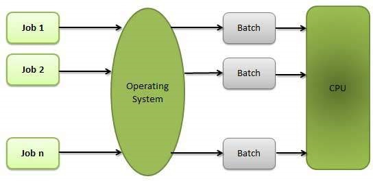

OS_ Properties
Batch processing
Batch processing is a technique in which an Operating System collects
the programs and data together in a batch before processing starts.
An operating system does the following activities related to batch processing:−
- The OS defines a job which has predefined sequence of commands, programs and data as a single unit.
- The OS keeps a number a jobs in memory and executes them without any manual information.
- Jobs are processed in the order of submission, i.e., first come first served fashion
- When a job completes its execution, its memory is released and the output for the
job gets copied into an output spool for later printing or processing.

Advantages
- Batch processing takes much of the work of the operator to the computer.
- Increased performance as a new job get started as soon as the previous job is finished,
without any manual intervention.
Disadvantages
- Difficult to debug program.
- A job could enter an infinite loop.
- Due to lack of protection scheme, one batch job can affect pending jobs.